容器——Network Namespace 和桥接网络模式¶
我们手工调用 Linux Network Namespace 的接口构建一个类似 Docker 桥接模式的网络来看下：
- Linux Network Namespace 接口的基本用法。
- Docker 桥接网络的工作原理。
要构建的网络拓扑：
创建 Network Namespace¶
# ip netns add container1
# ip netns add container2
# ip netns list
container2
container1
新建的 namespace 中只有一个 loopback 设备，路由表为空（默认执行 ip 是在全局 namespace 中，要在新创建的 namespace 中运行命令需要加上前缀 ip netns exec NAMESPACE ）。
# ip netns exec container1 ip a
1: lo: <LOOPBACK> mtu 65536 qdisc noop state DOWN group default
link/loopback 00:00:00:00:00:00 brd 00:00:00:00:00:00
# ip netns exec container1 route
Kernel IP routing table
Destination Gateway Genmask Flags Metric Ref Use Iface
此时在新创建的 namespace中 ping 127.0.0.1 会报网络不可达，我们需要先启动 lo 网络设备。
# ip netns exec container1 ping 127.0.0.1
connect: Network is unreachable
# ip netns exec container1 ip link set dev lo up
# ip netns exec container1 ping 127.0.0.1 -c1
PING 127.0.0.1 (127.0.0.1) 56(84) bytes of data.
64 bytes from 127.0.0.1: icmp_seq=1 ttl=64 time=0.018 ms
...
创建网桥¶
我们创建一个虚拟网桥设备并给其添加一个 ip 172.16.1.1 ，开启三层转发，从而可以充当 docker 网络的网关。
# brctl addbr docker0
# brctl show
bridge name bridge id STP enabled interfaces
docker0 8000.000000000000 no
# ip addr add 172.16.1.1/16 dev docker0
# ip link set dev docker0 up
# route
Kernel IP routing table
Destination Gateway Genmask Flags Metric Ref Use Iface
default 10.0.2.2 0.0.0.0 UG 0 0 0 eth0
10.0.2.0 * 255.255.255.0 U 0 0 0 eth0
172.16.0.0 * 255.255.0.0 U 0 0 0 docker0
创建虚拟网络设备¶
接下来，我们用 veth 来将上面创建的网络 namespace 和网桥连接起来：
The veth devices are virtual Ethernet devices. They can act as tunnels between network namespaces to create a bridge to a physical network device in another namespace
创建 veth：
# ip link add veth0 type veth peer name veth1
# ip link
...
5: docker0: <BROADCAST,MULTICAST,UP,LOWER_UP> mtu 1500 qdisc noqueue state UNKNOWN mode DEFAULT group default
link/ether ca:cc:fe:99:02:cc brd ff:ff:ff:ff:ff:ff
8: veth1: <BROADCAST,MULTICAST> mtu 1500 qdisc noop state DOWN mode DEFAULT group default qlen 1000
link/ether f6:94:3b:74:48:ed brd ff:ff:ff:ff:ff:ff
9: veth0: <BROADCAST,MULTICAST> mtu 1500 qdisc noop state DOWN mode DEFAULT group default qlen 1000
link/ether 92:d4:1d:0f:3e:9f brd ff:ff:ff:ff:ff:ff
将 veth 的一端插到网桥上：
# brctl addif docker0 veth0
# ip link set veth0 up
# brctl show
bridge name bridge id STP enabled interfaces
docker0 8000.92d41d0f3e9f no veth0
将另一端放入到网络 namespace container1 中，并将其重命名为 eth0 ，给其配置 ip 为 172.16.1.2 ，添加默认路由：
# ip link set veth1 netns container1
# ip netns exec container1 ip a
...
8: veth1: <BROADCAST,MULTICAST> mtu 1500 qdisc noop state DOWN group default qlen 1000
link/ether f6:94:3b:74:48:ed brd ff:ff:ff:ff:ff:ff
# ip netns exec container1 ip link set veth1 name eth0
# ip netns exec container1 ip a
...
8: eth0: <BROADCAST,MULTICAST> mtu 1500 qdisc noop state DOWN group default qlen 1000
link/ether f6:94:3b:74:48:ed brd ff:ff:ff:ff:ff:ff
# ip netns exec container1 ip link set eth0 up
# ip netns exec container1 ip addr add 172.16.1.2/16 dev eth0
# ip netns exec container1 ip route add default via 172.16.1.1
此时，namespace container1 可以 ping 通 docker0，主机上的其它网络设备以及其它 namespace 中的地址了。
# ip netns exec container1 ping 172.16.1.1 -c1
PING 172.16.1.1 (172.16.1.1) 56(84) bytes of data.
64 bytes from 172.16.1.1: icmp_seq=1 ttl=64 time=0.032 ms
...
# ip netns exec container1 ping 10.0.2.15 -c1
PING 10.0.2.15 (10.0.2.15) 56(84) bytes of data.
64 bytes from 10.0.2.15: icmp_seq=1 ttl=64 time=0.038 ms
...
container2 同理，这样我们创建的 namespace 相互之间、和全局 namspace 之间就互相联通了。
访问外网¶
如果想要在 namespace container1 中 ping 通物理主机之外的 ip，还需通过 iptables 对 ip 包的源地址做 snat：
# echo 1 >/proc/sys/net/ipv4/ip_forward
# iptables -t nat -A POSTROUTING -s 172.16.0.0/16 ! -o docker0 -j MASQUERADE
# iptables -t nat -L -v
...
Chain POSTROUTING (policy ACCEPT 3 packets, 207 bytes)
pkts bytes target prot opt in out source destination
3 252 MASQUERADE all -- any !docker0 172.16.0.0/16 anywhere
# ip netns exec container1 ping 8.8.8.8 -c1
PING 8.8.8.8 (8.8.8.8) 56(84) bytes of data.
64 bytes from 8.8.8.8: icmp_seq=1 ttl=61 time=129 ms
...